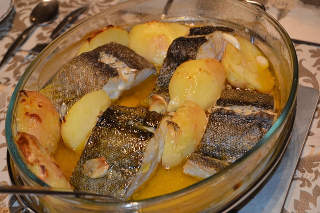
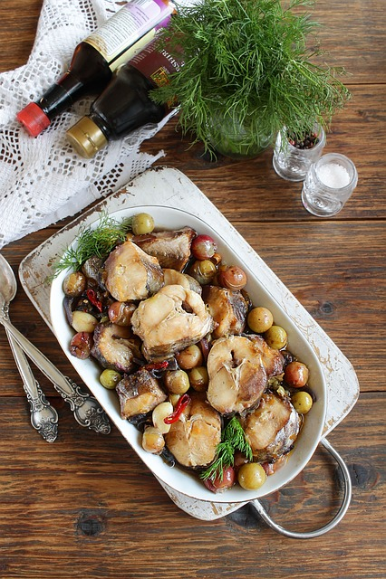

Recetas de pescado


Bacalao al horno estilo puchero
Fresco bacalao con mucho sabor y facil de hacer | Ingredientes | |
|---|---|
| Para 2 raciones | |
| Cebolla | Pimiento rojo |
| Sal | Vino blanco |
| Bacalao 450g | Guindilla cayena |
- Cómo hacer bacalao al horno
- Precalentar el horno a 180ºC y preparar una fuente de vidrio o similar. Cortar la cebolla en juliana y el pimiento lavado en tiras, desechando las semillas y filamentos internos. Laminar los ajos, reservándolos aparte.
- Combinar las verduras en la fuente, salar ligeramente, añadir el laurel y un chorro generoso de aceite de oliva. Mezclar bien y hornear 10 minutos; remover y continuar el horneado unos 8-10 minutos más, hasta que la cebolla esté bien tierna.
- Mientras tanto, preparar el pescado secándolo con papel de cocina y dejando que se atempere un poco. Colocar sobre las verduras, añadiendo otro chorrito de aceite por encima y, si tenemos, un poco de vino blanco. Devolver al horno.
- Preparar un refrito de ajos mientras el pescado se cocina. Calentar un fondo de aceite en una sartén pequeña y cocinar los dientes laminados con las cayenas a temperatura suave, cuidando que no se quemen. Deben quedar dorados y crujientes.
- Cuando el bacalao esté listo, tras unos 15-20 minutos, según el grosor, echar el contenido de la sartén por encima del pescado y servir inmediatamente.
Calamares
Cena rica y facil y rápida de preparar
| Ingredientes | |
|---|---|
| Para 2 raciones | |
| 1 Calamar grande | Harina trigo |
| Sal | Aceite oliva |
- Limpiamos muy bien el calamar de pieles y aletas. En algunas zonas del Mediterráneo no le quitan la piel buscando que quede más tierno.
- Lo cortamos en anillas gruesas, de algo más de 1 cm de anchas y lo cubrimos de leche, y esperamos un mínimo de media hora. Lo escurrimos bien y secamos con papel de cocina.
- En una bolsa de plástico ponemos bastante harina y vamos echando los calamares de poco en poco. Movemos la bolsa de arriba a abajo para que cojan la harina justa. De todas formas al sacarlos los ponemos en un colador para sacudir el exceso de harina.
- Los sumergimos en aceite caliente en el que hemos puesto una tira de piel de limón sin nada de blanco. La temperatura en freidora es de de 175º. En sartén podemos comprobar la temperatura añadiendo al aceite un trocito de pan: si se queda en la superficie sin hundirse y burbujeando, está a la temperatura correcta.
- Freímos un minuto hasta que doren ligeramente y escurrimos el exceso de aceite sobre papel de cocina antes de servir.
Merluza con verduras
| Ingredientes | |
|---|---|
| Para 2 raciones | |
| 1/2 merluza mediana | 2 tomates |
| 2 patatas | 1 pimiento verde y 1 rojo |
| 1 cebolla | sal y pimienta |
- COMO HACER MERLUZA AL HORNO CON VERDURAS:
- Cortamos la verdura. La patata y el tomate, en rodajas de alrededor de un cm de grosor y el pimiento y la cebolla en tiras finas
- Freimos las hortalizas más duras (la patata). No se trata de freirlas hasta que estén totalmente cocinadas. Con la mitad bastará. Así que, freímos las patatas en abundante aceite durante unos 5 minutos. También puedes cocerlas en agua pero en mi opinión, fritas quedán más ricas
- En el fondo de una bandeja para horno, colocamos toda la verdura. Salpimentamos y encima de la verdura colocamos la merluza. Después mojamos todo bien con 1 vaso de agua y salpimentamos merluza. Terminamos de mojar todo con un chorrito de aceite de oliva.
- Metemos al horno previamente calentado a 200ºC. Dejamos cocinar 20 minutos. No más ya que la merluza se cocina muy rápidamente y si nos pasamos de tiempo, acabará resecandose en exceso.